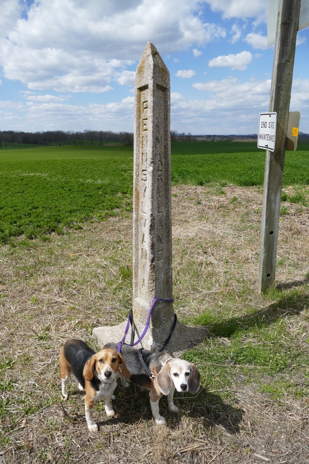

We detoured from I-81 to this beagle-accessible early-20th-century marker of the Mason-Dixon line. Halley is in Maryland and Wallace in Pennsylvania. The adjacent two-lane road has a discontinuity at this point, where Pennsylvania route 997 becomes Maryland route 64 and the road maintenance responsibility changes.
Hagerstown Halley Beagle Maryland Pennsylvania Wallace Beagle Waynesboro